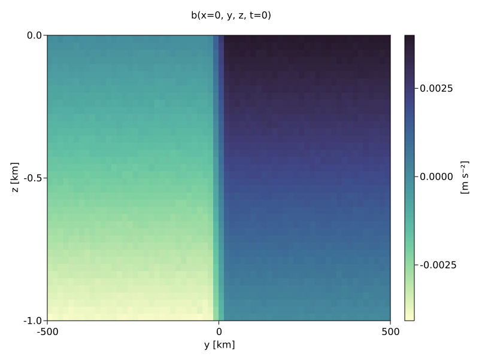

Baroclinic adjustment
In this example, we simulate the evolution and equilibration of a baroclinically unstable front.
Install dependencies
First let's make sure we have all required packages installed.
using Pkg
pkg"add Oceananigans, CairoMakie, JLD2"using Oceananigans
using Oceananigans.UnitsGrid
We use a three-dimensional channel that is periodic in the x direction:
Lx = 1000kilometers # east-west extent [m]
Ly = 1000kilometers # north-south extent [m]
Lz = 1kilometers # depth [m]
Nx = 64
Ny = 64
Nz = 40
grid = RectilinearGrid(CPU();
topology = (Periodic, Bounded, Bounded),
size = (Nx, Ny, Nz),
x = (0, Lx),
y = (-Ly/2, Ly/2),
z = (-Lz, 0),
halo = (3, 3, 3))64×64×40 RectilinearGrid{Float64, Periodic, Bounded, Bounded} on CPU with 3×3×3 halo
├── Periodic x ∈ [0.0, 1.0e6) regularly spaced with Δx=15625.0
├── Bounded y ∈ [-500000.0, 500000.0] regularly spaced with Δy=15625.0
└── Bounded z ∈ [-1000.0, 0.0] regularly spaced with Δz=25.0Turbulence closures
We prescribe the values of vertical viscocity and diffusivity according to the ratio of the vertical and lateral grid spacing.
Δx, Δz = Lx/Nx, Lz/Nz
𝒜 = Δz/Δx # Grid cell aspect ratio.
κh = 0.1 # [m² s⁻¹] horizontal diffusivity
νh = 0.1 # [m² s⁻¹] horizontal viscosity
κz = 𝒜 * κh # [m² s⁻¹] vertical diffusivity
νz = 𝒜 * νh # [m² s⁻¹] vertical viscosity
horizontal_diffusive_closure = HorizontalScalarDiffusivity(ν = νh, κ = κh)
vertical_diffusive_closure = VerticalScalarDiffusivity(VerticallyImplicitTimeDiscretization();
ν = νz, κ = κz)Model
We built a HydrostaticFreeSurfaceModel with an ImplicitFreeSurface solver. Regarding Coriolis, we use a beta-plane centered at 45° South.
model = HydrostaticFreeSurfaceModel(; grid,
coriolis = BetaPlane(latitude = -45),
buoyancy = BuoyancyTracer(),
tracers = :b,
closure = (vertical_diffusive_closure, horizontal_diffusive_closure),
momentum_advection = WENO5(),
tracer_advection = WENO5(),
free_surface = ImplicitFreeSurface())HydrostaticFreeSurfaceModel{CPU, RectilinearGrid}(time = 0 seconds, iteration = 0)
├── grid: 64×64×40 RectilinearGrid{Float64, Periodic, Bounded, Bounded} on CPU with 3×3×3 halo
├── timestepper: QuasiAdamsBashforth2TimeStepper
├── tracers: b
├── closure: Tuple with 2 closures:
│ ├── HorizontalScalarDiffusivity{ExplicitTimeDiscretization}(ν=0.1, κ=(b=0.1,))
│ └── VerticalScalarDiffusivity{VerticallyImplicitTimeDiscretization}(ν=0.00016, κ=(b=0.00016,))
├── buoyancy: BuoyancyTracer with -ĝ = ZDirection
├── free surface: ImplicitFreeSurface with gravitational acceleration 9.80665 m s⁻²
│ └── solver: FFTImplicitFreeSurfaceSolver
└── coriolis: BetaPlane{Float64}We want to initialize our model with a baroclinically unstable front plus some small-amplitude noise.
"""
ramp(y, Δy)
Linear ramp from 0 to 1 between -Δy/2 and +Δy/2.
For example:
```
y < -Δy/2 => ramp = 0
-Δy/2 < y < -Δy/2 => ramp = y / Δy
y > Δy/2 => ramp = 1
```
"""
ramp(y, Δy) = min(max(0, y/Δy + 1/2), 1)We then use ramp(y, Δy) to construct an initial buoyancy configuration of a baroclinically unstable front. The front has a buoyancy jump Δb over a latitudinal width Δy.
N² = 4e-6 # [s⁻²] buoyancy frequency / stratification
M² = 8e-8 # [s⁻²] horizontal buoyancy gradient
Δy = 50kilometers # width of the region of the front
Δb = Δy * M² # buoyancy jump associated with the front
ϵb = 1e-2 * Δb # noise amplitude
bᵢ(x, y, z) = N² * z + Δb * ramp(y, Δy) + ϵb * randn()
set!(model, b=bᵢ)Let's visualize the initial buoyancy distribution.
using CairoMakie
x, y, z = 1e-3 .* nodes((Center, Center, Center), grid) # convert m -> km
b = model.tracers.b
fig, ax, hm = heatmap(y, z, interior(b)[1, :, :],
colormap=:deep,
axis = (xlabel = "y [km]", ylabel = "z [km]"))
Colorbar(fig[1, 2], hm, label = "[m s⁻²]")
fig[0, :] = Label(fig, "b(x=0, y, z, t=0)")
Now let's built a Simulation.
Δt₀ = 5minutes
stop_time = 40days
simulation = Simulation(model, Δt=Δt₀, stop_time=stop_time)Simulation of HydrostaticFreeSurfaceModel{CPU, RectilinearGrid}(time = 0 seconds, iteration = 0)
├── Next time step: 5 minutes
├── Elapsed wall time: 0 seconds
├── Wall time per iteration: NaN years
├── Stop time: 40 days
├── Stop iteration : Inf
├── Wall time limit: Inf
├── Callbacks: OrderedDict with 4 entries:
│ ├── stop_time_exceeded => Callback of stop_time_exceeded on IterationInterval(1)
│ ├── stop_iteration_exceeded => Callback of stop_iteration_exceeded on IterationInterval(1)
│ ├── wall_time_limit_exceeded => Callback of wall_time_limit_exceeded on IterationInterval(1)
│ └── nan_checker => Callback of NaNChecker for u on IterationInterval(100)
├── Output writers: OrderedDict with no entries
└── Diagnostics: OrderedDict with no entriesWe add a TimeStepWizard callback to adapt the siulation's time-step,
wizard = TimeStepWizard(cfl=0.2, max_change=1.1, max_Δt=20minutes)
simulation.callbacks[:wizard] = Callback(wizard, IterationInterval(20))Callback of TimeStepWizard(cfl=0.2, max_Δt=1200.0, min_Δt=0.0) on IterationInterval(20)Also, we add a callback to print a message about how the simulation is going,
using Printf
wall_clock = [time_ns()]
function print_progress(sim)
@printf("[%05.2f%%] i: %d, t: %s, wall time: %s, max(u): (%6.3e, %6.3e, %6.3e) m/s, next Δt: %s\n",
100 * (sim.model.clock.time / sim.stop_time),
sim.model.clock.iteration,
prettytime(sim.model.clock.time),
prettytime(1e-9 * (time_ns() - wall_clock[1])),
maximum(abs, sim.model.velocities.u),
maximum(abs, sim.model.velocities.v),
maximum(abs, sim.model.velocities.w),
prettytime(sim.Δt))
wall_clock[1] = time_ns()
return nothing
end
simulation.callbacks[:print_progress] = Callback(print_progress, IterationInterval(100))Callback of print_progress on IterationInterval(100)Diagnostics/Output
Add some diagnostics. Here, we save the buoyancy, $b$, at the edges of our domain as well as the zonal ($x$) averages of buoyancy and zonal velocity $u$.
u, v, w = model.velocities
B = Field(Average(b, dims=1))
U = Field(Average(u, dims=1))
filename = "baroclinic_adjustment"
save_fields_interval = 0.5day
slicers = (west = (1, :, :),
east = (grid.Nx, :, :),
south = (:, 1, :),
north = (:, grid.Ny, :),
bottom = (:, :, 1),
top = (:, :, grid.Nz))
for side in keys(slicers)
indices = slicers[side]
simulation.output_writers[side] = JLD2OutputWriter(model, (; b, u);
filename = filename * "_$(side)_slice",
schedule = TimeInterval(save_fields_interval),
indices)
end
simulation.output_writers[:zonal] = JLD2OutputWriter(model, (b=B, u=U);
schedule = TimeInterval(save_fields_interval),
filename = filename * "_zonal_average")JLD2OutputWriter scheduled on TimeInterval(12 hours):
├── filepath: ./baroclinic_adjustment_zonal_average.jld2
├── 2 outputs: (b, u)
├── array type: Array{Float32}
├── including: [:grid, :coriolis, :buoyancy, :closure]
└── max filesize: Inf YiBNow let's run!
@info "Running the simulation..."
run!(simulation)
@info "Simulation completed in " * prettytime(simulation.run_wall_time)[ Info: Running the simulation...
[ Info: Initializing simulation...
[00.00%] i: 0, t: 0 seconds, wall time: 43.647 seconds, max(u): (0.000e+00, 0.000e+00, 0.000e+00) m/s, next Δt: 5.500 minutes
[ Info: ... simulation initialization complete (23.625 seconds)
[ Info: Executing initial time step...
[ Info: ... initial time step complete (2.420 minutes).
[01.17%] i: 100, t: 11.193 hours, wall time: 3.024 minutes, max(u): (6.911e-01, 3.383e-01, 3.376e-03) m/s, next Δt: 8.858 minutes
[03.03%] i: 200, t: 1.213 days, wall time: 23.139 seconds, max(u): (5.949e-01, 3.586e-01, 2.567e-03) m/s, next Δt: 14.266 minutes
[05.99%] i: 300, t: 2.396 days, wall time: 15.740 seconds, max(u): (5.568e-01, 3.030e-01, 2.069e-03) m/s, next Δt: 20 minutes
[09.44%] i: 400, t: 3.778 days, wall time: 15.023 seconds, max(u): (4.658e-01, 2.841e-01, 2.070e-03) m/s, next Δt: 20 minutes
[12.92%] i: 500, t: 5.167 days, wall time: 24.790 seconds, max(u): (4.550e-01, 2.581e-01, 1.738e-03) m/s, next Δt: 20 minutes
[16.39%] i: 600, t: 6.556 days, wall time: 14.665 seconds, max(u): (4.451e-01, 2.553e-01, 1.943e-03) m/s, next Δt: 20 minutes
[19.86%] i: 700, t: 7.944 days, wall time: 13.223 seconds, max(u): (4.811e-01, 4.449e-01, 2.256e-03) m/s, next Δt: 20 minutes
[23.27%] i: 800, t: 9.309 days, wall time: 14.940 seconds, max(u): (6.126e-01, 6.466e-01, 3.105e-03) m/s, next Δt: 20 minutes
[26.07%] i: 900, t: 10.428 days, wall time: 14.889 seconds, max(u): (8.663e-01, 7.717e-01, 5.625e-03) m/s, next Δt: 14.816 minutes
[28.51%] i: 1000, t: 11.406 days, wall time: 15.555 seconds, max(u): (1.048e+00, 8.124e-01, 4.662e-03) m/s, next Δt: 14.269 minutes
[31.18%] i: 1100, t: 12.470 days, wall time: 15.958 seconds, max(u): (9.162e-01, 9.029e-01, 6.074e-03) m/s, next Δt: 13.719 minutes
[33.65%] i: 1200, t: 13.460 days, wall time: 13.799 seconds, max(u): (1.035e+00, 1.051e+00, 4.855e-03) m/s, next Δt: 14.196 minutes
[36.13%] i: 1300, t: 14.451 days, wall time: 14.534 seconds, max(u): (9.167e-01, 8.848e-01, 4.517e-03) m/s, next Δt: 17.518 minutes
[39.38%] i: 1400, t: 15.750 days, wall time: 15.890 seconds, max(u): (9.366e-01, 9.583e-01, 4.008e-03) m/s, next Δt: 20 minutes
[42.74%] i: 1500, t: 17.096 days, wall time: 15.617 seconds, max(u): (9.240e-01, 1.073e+00, 4.194e-03) m/s, next Δt: 19.869 minutes
[46.18%] i: 1600, t: 18.472 days, wall time: 13.467 seconds, max(u): (1.012e+00, 9.665e-01, 3.802e-03) m/s, next Δt: 20 minutes
[49.65%] i: 1700, t: 19.861 days, wall time: 16.661 seconds, max(u): (1.017e+00, 1.036e+00, 3.261e-03) m/s, next Δt: 20 minutes
[53.12%] i: 1800, t: 21.250 days, wall time: 15.929 seconds, max(u): (1.000e+00, 9.581e-01, 3.368e-03) m/s, next Δt: 20 minutes
[56.53%] i: 1900, t: 22.611 days, wall time: 16.803 seconds, max(u): (1.013e+00, 1.098e+00, 3.137e-03) m/s, next Δt: 20 minutes
[60.00%] i: 2000, t: 24 days, wall time: 15.284 seconds, max(u): (9.982e-01, 1.013e+00, 3.327e-03) m/s, next Δt: 20 minutes
[63.47%] i: 2100, t: 25.389 days, wall time: 14.878 seconds, max(u): (9.468e-01, 9.789e-01, 4.348e-03) m/s, next Δt: 19.166 minutes
[66.77%] i: 2200, t: 26.708 days, wall time: 15.866 seconds, max(u): (9.791e-01, 1.030e+00, 4.564e-03) m/s, next Δt: 18.258 minutes
[69.96%] i: 2300, t: 27.985 days, wall time: 16.187 seconds, max(u): (1.121e+00, 9.220e-01, 3.167e-03) m/s, next Δt: 20 minutes
[73.40%] i: 2400, t: 29.361 days, wall time: 15.294 seconds, max(u): (9.493e-01, 1.068e+00, 2.875e-03) m/s, next Δt: 20 minutes
[76.88%] i: 2500, t: 30.750 days, wall time: 15.407 seconds, max(u): (8.979e-01, 1.144e+00, 4.289e-03) m/s, next Δt: 19.429 minutes
[79.74%] i: 2600, t: 31.896 days, wall time: 14.919 seconds, max(u): (9.962e-01, 1.087e+00, 5.962e-03) m/s, next Δt: 13.977 minutes
[82.11%] i: 2700, t: 32.845 days, wall time: 17.596 seconds, max(u): (1.031e+00, 1.031e+00, 4.789e-03) m/s, next Δt: 16.163 minutes
[85.31%] i: 2800, t: 34.125 days, wall time: 17.691 seconds, max(u): (1.023e+00, 1.063e+00, 2.631e-03) m/s, next Δt: 20 minutes
[88.78%] i: 2900, t: 35.514 days, wall time: 17.717 seconds, max(u): (1.138e+00, 1.175e+00, 2.938e-03) m/s, next Δt: 20 minutes
[92.26%] i: 3000, t: 36.903 days, wall time: 18.027 seconds, max(u): (1.052e+00, 1.055e+00, 2.632e-03) m/s, next Δt: 20 minutes
[95.73%] i: 3100, t: 38.292 days, wall time: 17.820 seconds, max(u): (1.003e+00, 8.744e-01, 2.808e-03) m/s, next Δt: 20 minutes
[99.20%] i: 3200, t: 39.681 days, wall time: 18.165 seconds, max(u): (9.755e-01, 8.800e-01, 2.226e-03) m/s, next Δt: 20 minutes
[ Info: Simulation is stopping. Model time 40 days has hit or exceeded simulation stop time 40 days.
[ Info: Simulation completed in 11.631 minutesVisualization
Now we are ready to visualize our resutls! We use CairoMakie in this example. On a system with OpenGL using GLMakie is more convenient as figures will be displayed on the screen.
using CairoMakie
filename = "baroclinic_adjustment"
fig = Figure(resolution = (1000, 800))
ax_b = fig[1, 1] = LScene(fig)We use Makie's Observable to animate the data. To dive into how Observables work we refer to Makie.jl's Documentation.
iter = Observable(0)Observable{Int64} with 0 listeners. Value:
0We open the saved output .jld2 files and extract the buoyancy surfaces on the top, bottom, and east surface.
using JLD2
zonal_file = jldopen(filename * "_zonal_average.jld2")
grid = zonal_file["serialized/grid"]
sides = keys(slicers)
slice_files = NamedTuple(side => jldopen(filename * "_$(side)_slice.jld2") for side in sides)(west = JLDFile /var/lib/buildkite-agent/builds/tartarus-16/clima/oceananigans/docs/build/generated/baroclinic_adjustment_west_slice.jld2 (read-only), east = JLDFile /var/lib/buildkite-agent/builds/tartarus-16/clima/oceananigans/docs/build/generated/baroclinic_adjustment_east_slice.jld2 (read-only), south = JLDFile /var/lib/buildkite-agent/builds/tartarus-16/clima/oceananigans/docs/build/generated/baroclinic_adjustment_south_slice.jld2 (read-only), north = JLDFile /var/lib/buildkite-agent/builds/tartarus-16/clima/oceananigans/docs/build/generated/baroclinic_adjustment_north_slice.jld2 (read-only), bottom = JLDFile /var/lib/buildkite-agent/builds/tartarus-16/clima/oceananigans/docs/build/generated/baroclinic_adjustment_bottom_slice.jld2 (read-only), top = JLDFile /var/lib/buildkite-agent/builds/tartarus-16/clima/oceananigans/docs/build/generated/baroclinic_adjustment_top_slice.jld2 (read-only))We build the coordinates and we rescale the vertical coordinate for visualization purposes.
x, y, z = nodes((Center, Center, Center), grid)
yscale = 2.5
zscale = 600
z = z .* zscale
y = y .* yscale
zonal_slice_displacement = 1.5Now let's make a 3D plot of the buoyancy and in front of it we'll use the zonally-averaged output to plot the instantaneous zonal-average of the buoyancy.
b_slices = (
east = @lift(Array(slice_files.east["timeseries/b/" * string($iter)][1, :, :])),
bottom = @lift(Array(slice_files.bottom["timeseries/b/" * string($iter)][:, :, 1])),
top = @lift(Array(slice_files.top["timeseries/b/" * string($iter)][:, :, 1]))
)
clims_b = @lift 1.1 .* extrema(slice_files.top["timeseries/b/" * string($iter)][:])
kwargs_b = (colorrange=clims_b, colormap=:deep, show_axis=false)
surface!(ax_b, y, z, b_slices.east; transformation = (:yz, x[end]), kwargs_b...)
surface!(ax_b, x, y, b_slices.bottom; transformation = (:xy, z[1]), kwargs_b...)
surface!(ax_b, x, y, b_slices.top; transformation = (:xy, z[end]), kwargs_b...)
b_avg = @lift zonal_file["timeseries/b/" * string($iter)][1, :, :]
surface!(ax_b, y, z, b_avg; transformation = (:yz, zonal_slice_displacement * x[end]), colorrange=clims_b, colormap=:deep)
contour!(ax_b, y, z, b_avg; levels = 15, linewidth=2, color=:black, transformation = (:yz, zonal_slice_displacement * x[end]), show_axis=false)
rotate_cam!(ax_b.scene, (π/20, -π/6, 0))Finally, we add a figure title with the time of the snapshot and then record a movie.
title = @lift(string("Buoyancy at t = ",
string(slice_files[1]["timeseries/t/" * string($iter)]/day), " days"))
fig[0, :] = Label(fig, title, textsize=55)
iterations = parse.(Int, keys(slice_files[1]["timeseries/t"]))
record(fig, filename * ".mp4", iterations, framerate=8) do i
@info "Plotting iteration $i of $(iterations[end])..."
iter[] = i
end[ Info: Plotting iteration 0 of 3223...
[ Info: Plotting iteration 106 of 3223...
[ Info: Plotting iteration 176 of 3223...
[ Info: Plotting iteration 229 of 3223...
[ Info: Plotting iteration 271 of 3223...
[ Info: Plotting iteration 308 of 3223...
[ Info: Plotting iteration 344 of 3223...
[ Info: Plotting iteration 380 of 3223...
[ Info: Plotting iteration 416 of 3223...
[ Info: Plotting iteration 452 of 3223...
[ Info: Plotting iteration 488 of 3223...
[ Info: Plotting iteration 524 of 3223...
[ Info: Plotting iteration 560 of 3223...
[ Info: Plotting iteration 596 of 3223...
[ Info: Plotting iteration 632 of 3223...
[ Info: Plotting iteration 668 of 3223...
[ Info: Plotting iteration 704 of 3223...
[ Info: Plotting iteration 740 of 3223...
[ Info: Plotting iteration 777 of 3223...
[ Info: Plotting iteration 814 of 3223...
[ Info: Plotting iteration 862 of 3223...
[ Info: Plotting iteration 907 of 3223...
[ Info: Plotting iteration 954 of 3223...
[ Info: Plotting iteration 1010 of 3223...
[ Info: Plotting iteration 1059 of 3223...
[ Info: Plotting iteration 1104 of 3223...
[ Info: Plotting iteration 1154 of 3223...
[ Info: Plotting iteration 1205 of 3223...
[ Info: Plotting iteration 1257 of 3223...
[ Info: Plotting iteration 1305 of 3223...
[ Info: Plotting iteration 1344 of 3223...
[ Info: Plotting iteration 1382 of 3223...
[ Info: Plotting iteration 1418 of 3223...
[ Info: Plotting iteration 1456 of 3223...
[ Info: Plotting iteration 1493 of 3223...
[ Info: Plotting iteration 1530 of 3223...
[ Info: Plotting iteration 1566 of 3223...
[ Info: Plotting iteration 1602 of 3223...
[ Info: Plotting iteration 1638 of 3223...
[ Info: Plotting iteration 1674 of 3223...
[ Info: Plotting iteration 1710 of 3223...
[ Info: Plotting iteration 1746 of 3223...
[ Info: Plotting iteration 1782 of 3223...
[ Info: Plotting iteration 1818 of 3223...
[ Info: Plotting iteration 1854 of 3223...
[ Info: Plotting iteration 1892 of 3223...
[ Info: Plotting iteration 1928 of 3223...
[ Info: Plotting iteration 1964 of 3223...
[ Info: Plotting iteration 2000 of 3223...
[ Info: Plotting iteration 2036 of 3223...
[ Info: Plotting iteration 2072 of 3223...
[ Info: Plotting iteration 2109 of 3223...
[ Info: Plotting iteration 2148 of 3223...
[ Info: Plotting iteration 2185 of 3223...
[ Info: Plotting iteration 2224 of 3223...
[ Info: Plotting iteration 2265 of 3223...
[ Info: Plotting iteration 2302 of 3223...
[ Info: Plotting iteration 2338 of 3223...
[ Info: Plotting iteration 2374 of 3223...
[ Info: Plotting iteration 2410 of 3223...
[ Info: Plotting iteration 2446 of 3223...
[ Info: Plotting iteration 2482 of 3223...
[ Info: Plotting iteration 2519 of 3223...
[ Info: Plotting iteration 2562 of 3223...
[ Info: Plotting iteration 2611 of 3223...
[ Info: Plotting iteration 2665 of 3223...
[ Info: Plotting iteration 2714 of 3223...
[ Info: Plotting iteration 2754 of 3223...
[ Info: Plotting iteration 2791 of 3223...
[ Info: Plotting iteration 2827 of 3223...
[ Info: Plotting iteration 2863 of 3223...
[ Info: Plotting iteration 2899 of 3223...
[ Info: Plotting iteration 2935 of 3223...
[ Info: Plotting iteration 2971 of 3223...
[ Info: Plotting iteration 3007 of 3223...
[ Info: Plotting iteration 3043 of 3223...
[ Info: Plotting iteration 3079 of 3223...
[ Info: Plotting iteration 3115 of 3223...
[ Info: Plotting iteration 3151 of 3223...
[ Info: Plotting iteration 3187 of 3223...
[ Info: Plotting iteration 3223 of 3223...Let's be tidy now and close all the .jld2 files we opened.
for file in slice_files
close(file)
end
close(zonal_file)This page was generated using Literate.jl.